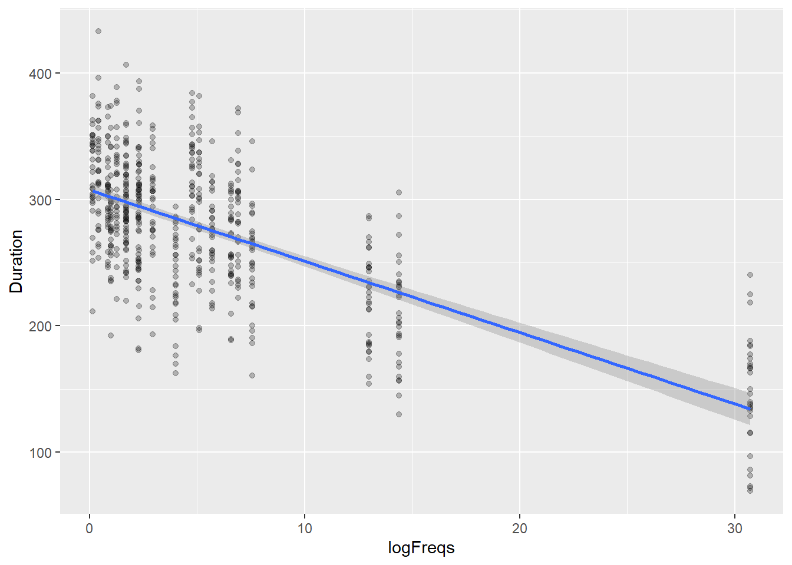

#load libraries
library(tidyverse)Assignment #3 Linear fitting with R - Answer Key
Task #1: Load required libraries
For this assignment we use tidyverse
Task #2: Open dataset
For this exercise we used a simulated dataset from a hypothetical experiment measuring the duration of vowels during production, generated following an example from Winter (2019).
The dataset is in the file ./data/extended_vowel_duration.csv and contains data from 30 participants, each recorded pronouncing 20 different words.
#Open file
dfVowel<-read.csv('./data/extended_vowel_duration.csv')The data contains the following columns:
SubjectID: ID of the participant from 1 to 30
Word: ID of the word from 1 to 20
logFreqs: logarithmic word frequency
Duration: vowel utterance duration measurement in milliseconds.
The SubjectID and Word columns are numerical, but should be treated as factors. It would not affect this exercise, but it is good practice to define categorical factors when reading the data to avoid changing them inadvertently.
Convert SubjectID and Word to factors
dfVowel$SubjectID <- as.factor(dfVowel$SubjectID)
dfVowel$Word <- as.factor(dfVowel$Word)Task #3: Plot dataset
You were asked to create a scatter plot of the measured vowel duration as a function of word frequency, including a linear fit. As per the example in the workgroup, we use ggplot
dfVowel %>% ggplot(aes(x=logFreqs, y=Duration)) +
geom_point(alpha = 1/4) +
geom_smooth(method = "lm")`geom_smooth()` using formula = 'y ~ x'
Observations on the plot:
There is an apparent linear relationship between the duration of vowels in produced words and the frequency of the word, expressed in logarithmic scale.
More frequent words, have a shorter duration, so we would expect a negative Pearson’s correlation coefficient value.
Task #4: Calculate correlation coefficient
Calculate Pearson’s correlation coefficient between logFreqs and Duration
r = cor(dfVowel$logFreqs, dfVowel$Duration)
print(r)[1] -0.6745614- As expected the negative Pearson’s coefficent value \(r = -0.67\) indicates a relatively high inverse correlation between the word frequency and the produced vowel duration.
Task #4.1 (EXTRA CREDIT): Assess significance of the Correlation Coefficient
To confirm the significance of the calculated correlation coefficient \(r\), we use the NHST methodology following the procedure practiced in Workgroup 3 and recalled here:

Manual calculation
Step 1: Define statistical hypotheses
Our null hypothesis is that the two variables are uncorrelated, so \(r=0\)
\[ H_0: r=0 \\ H_a: r\neq 0 \]
Step 2: Define sampling distribution
For the Pearson coefficient, \(r\), the sampling distribution is normal with a mean \(\mu_{r}=0\) if \(H_0\) is true
Step 3: Identify the test statistic
The test statistic is following a t-distribution with \(df = n-2\) and value
\[ t=\frac{r\times\sqrt{n-2}}{\sqrt{1-r^2}} \]
In the exercise, the number of data points, n, is \(n=600\)
n = nrow(dfVowel)The t-statistics will be :
t_stat = (r * sqrt(n-2)) / sqrt(1-r^2)
t_stat[1] -22.34534\[ t= \frac{r\times \sqrt{n-2}}{\sqrt{1-r^2}}=\frac{-0.67 \times \sqrt{600-2}}{\sqrt{1-(-0.67)^2}} = -22.35 \]
- Step 4: Determine critical value
If we select a confidence level of 5%, \(\alpha = 0.05\), we can extract the value of \(t_{critical}\) considering the \(df = 600-2=598\). This can be calculated in R using the function qt() that returns a value of the Student t distribution.
Important
Note that we use a two-tailed test, so for a confidence level \(\alpha = 0.05\) we use 0.025 for p (half of 0.05). The reason to use a two-tailed test is that our hypothesis is that \(r \ne 0\), not whether it is larger or smaller than a certain value.
qt(p = 0.025, df = 598)[1] -1.963939Step 5: reach statistical conclusion:
\[ t_{value} = -22.35 \lt t_{critical} = -1.96 \]
NotePlease note how the \(t_{critical}\) value is virtually the same as for a normal distribution for an \(\alpha\) level of 0.05, since the number of samples is high (>> 50).
We can conclude that the correlation coefficient is significantly different from 0. In other words, there is a statistically significant relationship between the variables.
Using cor.test()
The same test of significance can be done using the function available in R:
cor.test(dfVowel$logFreqs,dfVowel$Duration)
Pearson's product-moment correlation
data: dfVowel$logFreqs and dfVowel$Duration
t = -22.345, df = 598, p-value < 2.2e-16
alternative hypothesis: true correlation is not equal to 0
95 percent confidence interval:
-0.7159482 -0.6284500
sample estimates:
cor
-0.6745614 The function provides the same results as in the manual calculation, with the addition of providing a 95% Confidence Interval for the coefficient.
Reporting correlation
The results could be reported following APA style as:
The produced vowel duration showed a negative relationship with the log transformed word frequency (\(r(598) = -.67, p<.01\))
Task #5: Build a linear model based for vowel duration
To generate a linear model for the vowel duration as a function of frequency we use the lm() function.
model <- lm(Duration~logFreqs, data = dfVowel)
summary(model)
Call:
lm(formula = Duration ~ logFreqs, data = dfVowel)
Residuals:
Min 1Q Median 3Q Max
-122.464 -27.642 0.916 29.627 127.628
Coefficients:
Estimate Std. Error t value Pr(>|t|)
(Intercept) 307.5055 2.2525 136.52 <2e-16 ***
logFreqs -5.6397 0.2524 -22.34 <2e-16 ***
---
Signif. codes: 0 '***' 0.001 '**' 0.01 '*' 0.05 '.' 0.1 ' ' 1
Residual standard error: 42.63 on 598 degrees of freedom
Multiple R-squared: 0.455, Adjusted R-squared: 0.4541
F-statistic: 499.3 on 1 and 598 DF, p-value: < 2.2e-16Note that the above produces the same output as if using the model with an explicit intercept:
model <- lm(Duration~ 1 + logFreqs, data = dfVowel)
summary(model)
Call:
lm(formula = Duration ~ 1 + logFreqs, data = dfVowel)
Residuals:
Min 1Q Median 3Q Max
-122.464 -27.642 0.916 29.627 127.628
Coefficients:
Estimate Std. Error t value Pr(>|t|)
(Intercept) 307.5055 2.2525 136.52 <2e-16 ***
logFreqs -5.6397 0.2524 -22.34 <2e-16 ***
---
Signif. codes: 0 '***' 0.001 '**' 0.01 '*' 0.05 '.' 0.1 ' ' 1
Residual standard error: 42.63 on 598 degrees of freedom
Multiple R-squared: 0.455, Adjusted R-squared: 0.4541
F-statistic: 499.3 on 1 and 598 DF, p-value: < 2.2e-16The fitted model can be expressed as :
\[ Duration_i = 307.51 -5.64 \times logFreqs_i \]
where the intercept coefficient is \(b_0 = 307.51\) and the slope is \(b_1 = -5.64\).
The output includes the t statistic and p-value of each of the coefficients, that indicate that they are different from 0.
In the next assignment we will explore the fit qualify measures and the check of the model validity.
End of assignment 3